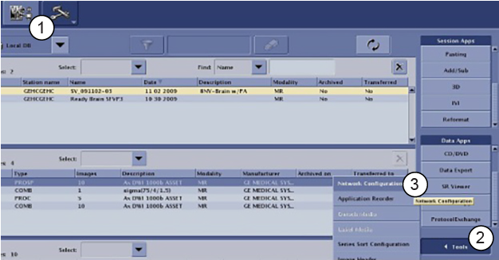
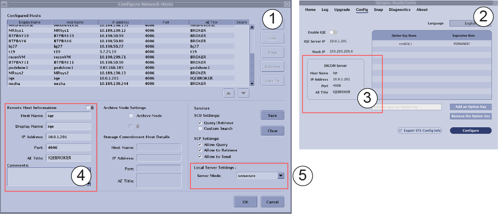
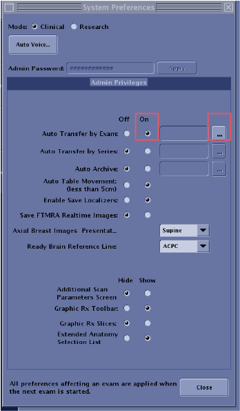
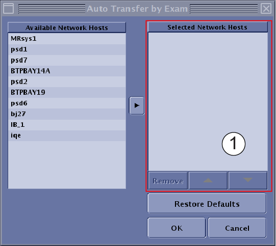

Accessing the DICOM Network Configuration user interface.
Prerequisites
| Personnel requirements |
|---|
| Required persons | Preliminary requirements | Procedure | Finalization |
|---|
| 1 | - | 10 minutes | - |
Note Class M Key is required.
Procedure
- Click the Image Management icon in the upper left corner of the MR OS window.
Figure 1. Image Management network configuration
| 1 | Image Management icon |
| 2 | Tools |
| 3 | Network Configuration |
- In the bottom right corner, select .
- Click IQE icon to open IQE UI, click Config.
- Type iqe in Host Name and press enter. And DICOM Server info will show in the Network configuration window, and the content from IQE Config tab.
Figure 2. IQE Config Page
| Item | Description |
|---|
| 1 | Network Configure Page |
| 2 | IQE Config Page |
| 3 | DICOM Sever info in IQE config page |
| 4 | Manually type DICOM Sever info to Network setting. Make sure Network setting is the same as DICOM Sever info in IQE config page. |
| 5 | Local Server Setting IQE Dicom Server didn't support configure Server mode: as "secure ", make sure "unsecure" mode is selected.
|
- Click OK.
- Check IQE DICOM server is not set as auto transfer target.
- Click System Preference.
- Type password and click Apply.
- Auto Transfer by Exam: Click On and Click ....


| Item | Description |
|---|
| 1 | Make sure there is no iqe on the Selected Network Hosts. |